🏠 우리집 가족 대시보드
거실 iPad(가로)와 어른 휴대폰에서 쓰는 가족용 홈 화면 웹앱(PWA)입니다. 루틴 체크 → 어른 도장 승인 → 30개 보상 → 돼지 저금통, 활동 타이머, 내일 준비물, 가족 활동, 사진 알림장, 메시지를 한 곳에서 다룹니다.
이 페이지는 화면 미리보기입니다. 실제 앱은 로그인·기기 간 실시간 동기화·사진 저장·푸시를 위해 서버가 필요해서 GitHub Pages에서는 동작하지 않습니다.
직접 써 보려면 저장소의 README대로
npm install && npm start 를 하거나 Dockerfile로 서버에 배포하세요.거실 iPad (가로)
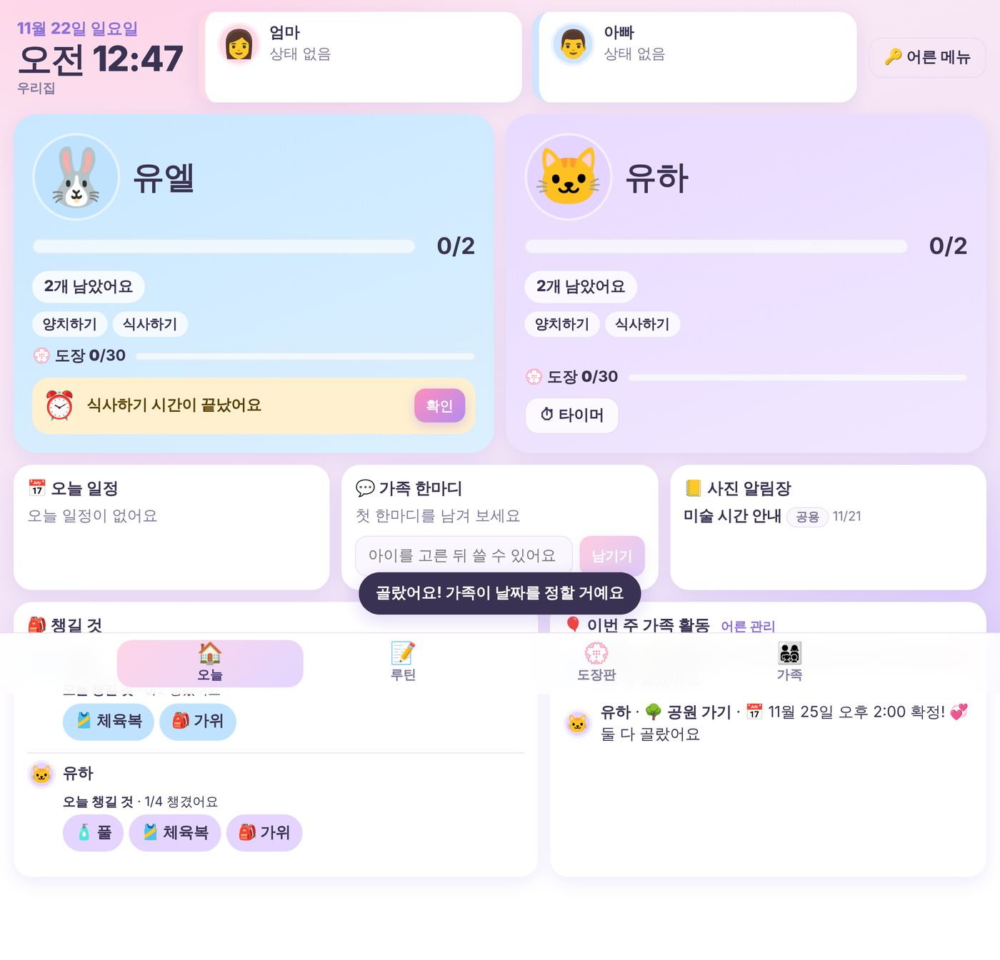
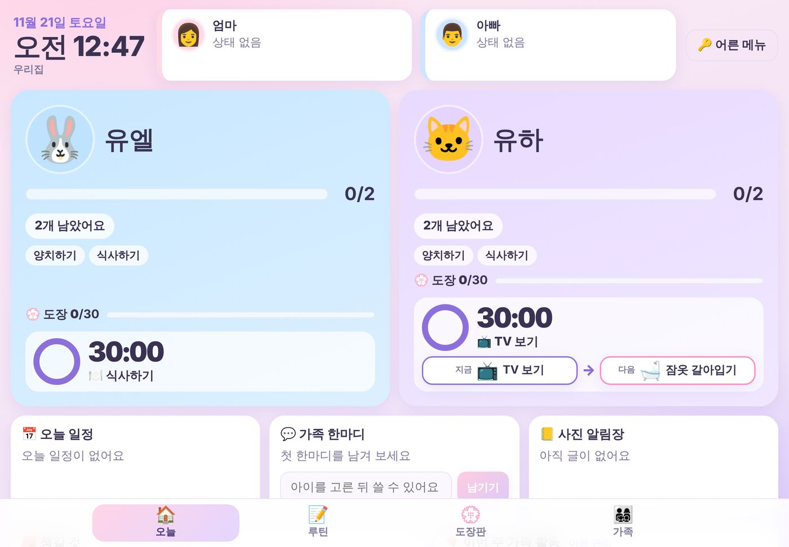
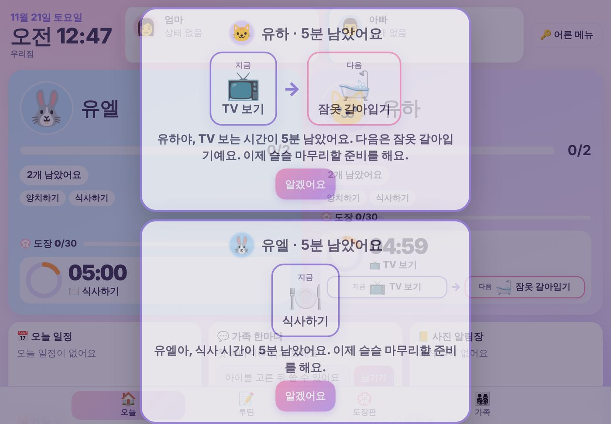
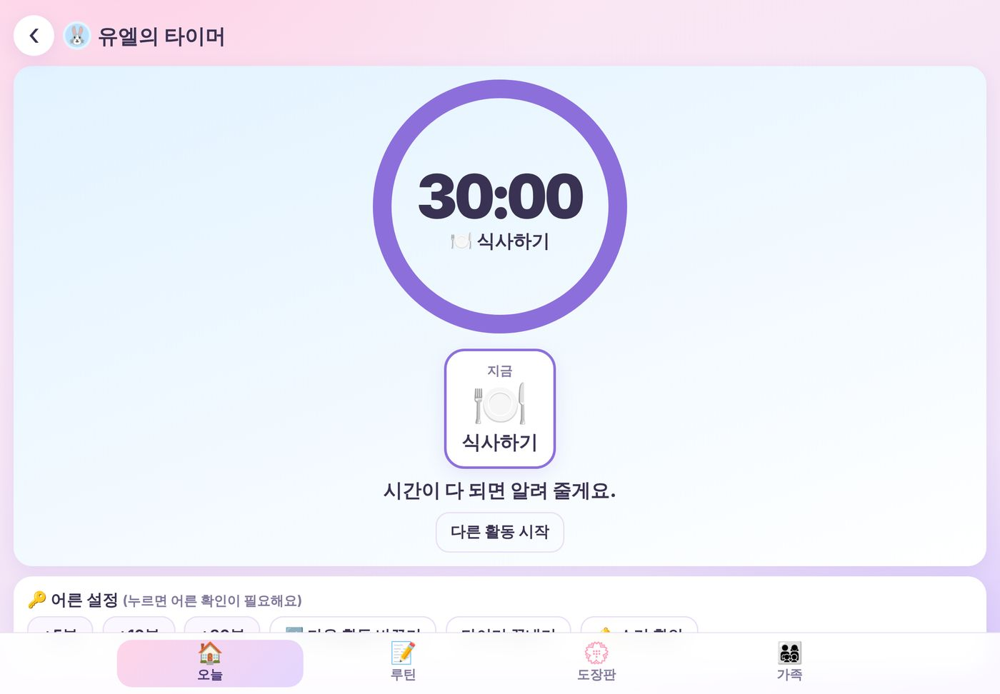
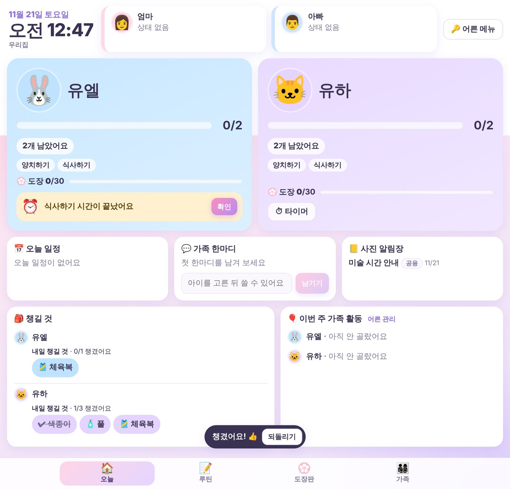
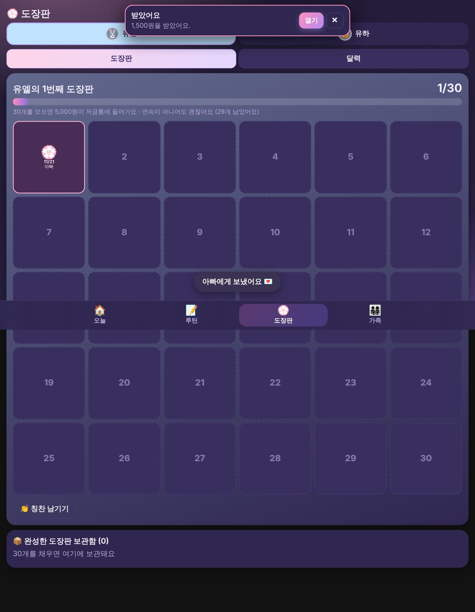
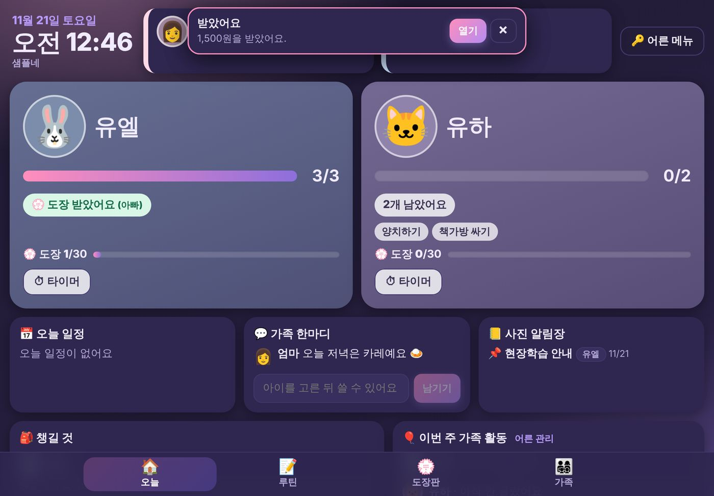
어른·아이 휴대폰
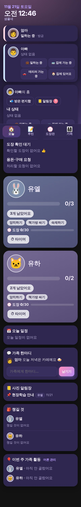
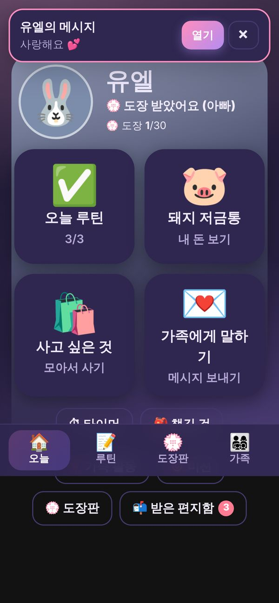
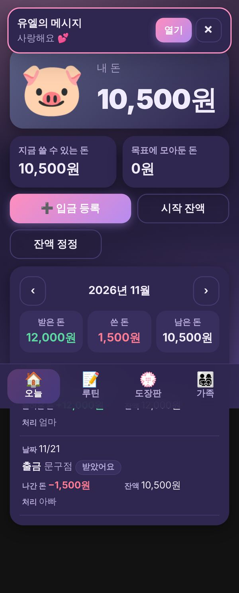
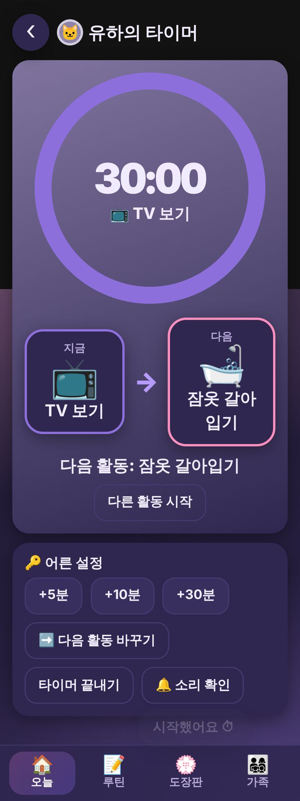
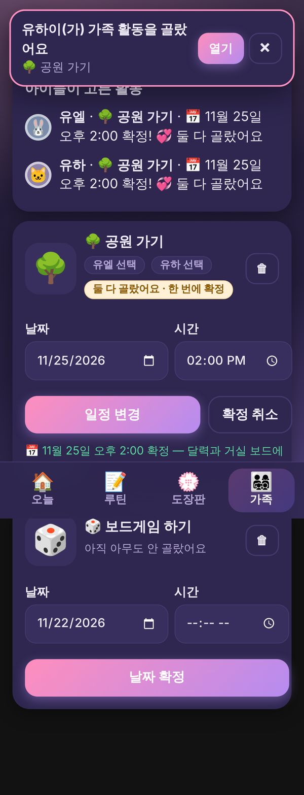
주요 기능
- 어른 3명(엄마·아빠·할머니) 각자 계정, 가족 코드·초대 링크 연결, 거실 공용 기기 모드와 어른 재인증
- 반복 루틴(과거 기록 보존), 첫 승인 1건만 확정되는 도장, 30개마다 5,000원 자동 적립
- 저금통 장부·출금/구매 요청·목표 저축·미션, 중복 차감 방지
- 활동 타이머(5분 전 예고·종료·연장), 다음 활동, 내일 준비물, 이번 주 가족 활동
- 사진 알림장, 부모 상태, 개인 메시지, 실시간 팝업과 휴대폰 푸시